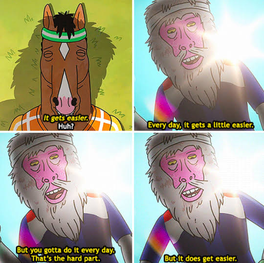

Somewhere in 2016-2017 I read a tumblr post by LadykeyMD about rules for medical interns, it was an expansion of a post compiled by the medblr community (intern rules, in my readinglist). And it was wonderful. Too bad her blog got hacked, and I couldn't find her original expansion in the wayback machine. Any how, I loved the authenticity of the post, and having gone through internship (and recently turning 28!) I wanted to recreate that authenticity. But instead of a somewhat niche and practical list of medical internship rules, this post is about stuff that I've realized thus far in life, I hope you like them.
It's that easy and that hard. If you skip breakfast, it'll hit you in the later half of the day; the fatigue, the nausea, the de-motivation, and the apathy. Not eating is just asking for trouble, and the worst part is, you wouldn't care about anything when you're hungry, not even the fact that you're hungry. Don't be a Dr-Jekyll-&-Mr-Hungry. Eat well on time.
Our minds have a tendency to stick to one pattern. They also have an entropy towards lifestyle degeneration. It's like gravity but for productivity. I know, because I've been in a rut more times than I can remember. And it's as easy as doing nothing. The study and academic tasks would pile the way unwashed dishes do, getting more repulsive each day. So you have to keep moving. Get out of the room, even for a 10 minute walk. Go to a cafe. Get away from your current pattern and environment, whether it's work or fusing with the couch. Let your mind reset. Wash away the piled entropy.
I've learned this the hard way. If you don't prioritize your energy and time above the convenience of other people, you'll get used. And as time goes on, what started as politeness becomes an expectation. So don't accept tasks that're not expected of someone in your position. Play by the book and don't go above and beyond on everything unless urgently needed. Whether it is pure kindness, self-hatred, or the subconscious tendency to correct a childhood's wrong, do not touch a cross you're not willing or can't carry, otherwise you'll get crushed by it's weight, or get crucified in the other person's place.
I thought everyone did, but then I read some progress notes. Not everyone gives a damn. Not everyone ignores the contradictory admission note and spends 10 mins with the patient to get the full story before rounds. Not everyone double and triple check their work. Not everyone asks for help if it could produce the best outcome. And sometimes it's because the work is heavy, or burnout, or whatever. But most of the time, it's just that people let it be. So if you did something important, give a damn about it when you can. Do it to the best of your abilities and a little more.
Here's the thing, regardless of your religious beliefs there're two salient facts about life and death; First, you didn't exist (or don't remember existing) before you were born, might as well been dead before your birth. And the second fact is that you'll never get to experience this exact life again after death (even if it were a simulation Ad infinitum, the order of occurrence is different).
So it all points towards one conclusion; You only have one version of this fleeting life. One gameplay that always ends with closing the game, regardless of what happens to the player. Thus sometimes, don't give a damn, the game is always closed at the end. Do what you need to do, play how you like it, enjoy, and don't let the comments ruin your gameplay. It's your game, no one else's, and it'll get closed soon.

During internship I had a list that I always check before signing off. During the day, some tasks are non-urgent, but they also can't wait till tomorrow, I just jot them down the tail list and give it a look after finishing the bulk of the main tasks.
Being consistent is important, but life won't always let you be. So build buffers into you routine and assume they'll get interrupted. Never schedule every second of your waking time, unless you're a CEO with a team of assistants.
This goes a long way. You'll meet the type of seniors who'll give you half-assed and vague orders. Be clear in what you want to say, and what you want to hear. When your job is following orders, don't let the half-assed stuff get by, it'll compound.
This also falls into the clear communication part. But it's also about communicating with yourself. Some opportinuties are lost because one assumed something that isn't. That grant is probably for a certain type of research, what if it isn't? I can't apply here, I probably don't meet the criteria, what if you did? She's way out of my league, probably has a parterner, what if she doesn't?
You'll sometimes meet those who will carry another's cross without being asked to. If you can inconvenience yourself a little to help them, do so.
It's 4AM on a plastic surgery rotation on-call, I haven't slept a wink in 22hrs and now it's the fourth call from the children's hospital. Another kid put their hands where they shouldn't have. During long hectic on-calls, you're on autopilot. Theory goes out the window, thinking is slow. So don't depend on only knowing the theories and hoping you can apply them when the time comes, apply them now till they become part of your autopilot. If something is important, integrate it into your autopilot.